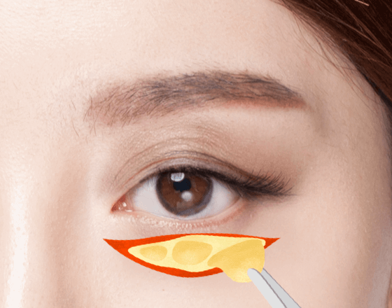
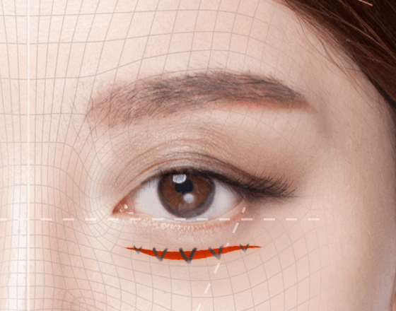
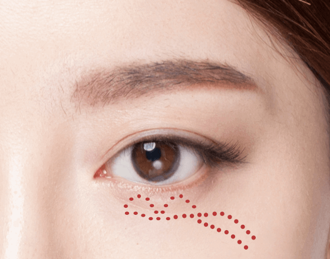
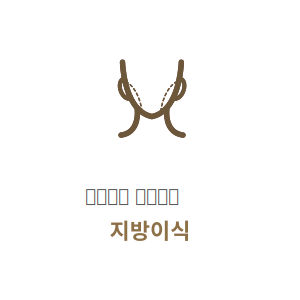

눈 밑 지방과 주름을
생기 있게 UP!
#하안검
성형
-

수술 시간
1시간
-

마취방법
수면/국소마취
-

실밥제거
4~5일 후
-

내원치료
1~2회
-

회복기간
7일 이내
하안검 성형이란?
노화가 진행되면서 눈 아래 지방을 싸고 있는 주머니가 늘어나며 눈 밑지방이 돌출되거나 눈 밑 주름이 많아져
더욱 나이들어 보이고 피곤한 인상을 줍니다.하안검성형은 눈 밑의 늘어진 피부와 처진 지방을 제거해
눈 밑 피부를 탄력있게 만들어 젋고 시원한 눈매로 만들어줍니다.
BEFORE

AFTER

하안검 성형방법
01
근막초고정을통한눈밑지방재배치
꺼진 부위 없이 눈 밑 지방만 불룩 튀어나온 경우
-

1
수술 전
눈 밑에 돌출된 지방의 범위
와 모양, 근육, 피부 등을 체크
후 시술 계획을 세웁니다. -

2
지방 재배치
눈 안쪽 결막을 절개 후 지방
을 안구 아래의 제자리로 재
배치 합니다. -

3
근막초 고정
지방이 다시 빠져 나오지
않도록 근막초라는 질긴 조직
으로 지방주머니를 한번 더
감싸줍니다. -

4
세밀한 봉합
절개 부위를 봉합합니다.
02
하안검 수술
지방의 돌출과 동시에 피부 늘어짐이 심한 경우
-
1
수술 전
개개인의 눈매에 맞는
높이와 라인을 디자인합니다. -
2
피부 및 지방 제거
처진 피부를 절제하고
불필요한 지방을 제거합니다. -
3
근육 고정
안쪽 피부를 당겨주어
근육을 올려 고정합니다. -
4
세밀한 봉합
절개 부위를 봉합합니다.
하안검성형 핵심포인트
시원하고 또렷한 눈매를 위해 연세자연미는
자세한 상담과 진단을 통해 가장 효과적인 방법으로 수술을 진행합니다.


재발 방지
피부만 절제하는 것이 아니라 눈을 뜨게하는 근육을
잡아주어 확실한 개선이 가능합니다.

흉터 최소화
눈 안쪽의 결막 또는 속눈썹 바로 아래
절개하기 때문에 흉터 부위가 눈에 띄지 않습니다.
함께하면좋은 시술
연세자연미성형외과는 개인의 상태에 따른 노화 증상과 원인에 맞는
여러가지 시술들을 복합적으로 진행하는 맞춤형 안티에이징 수술법으로
자연스럽게 젊어지는 아름다움을 선물해드립니다.


- 